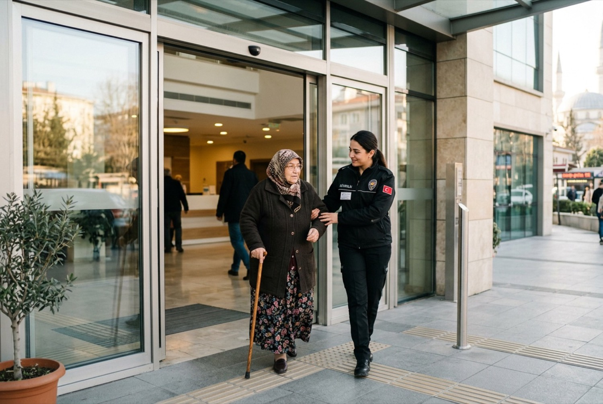
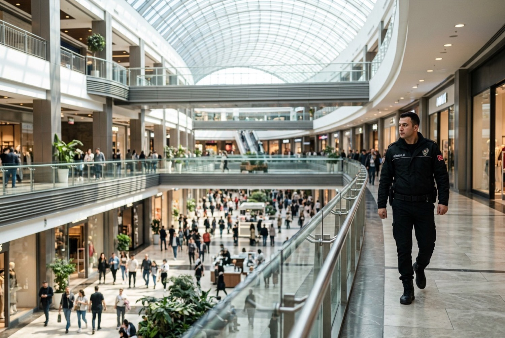
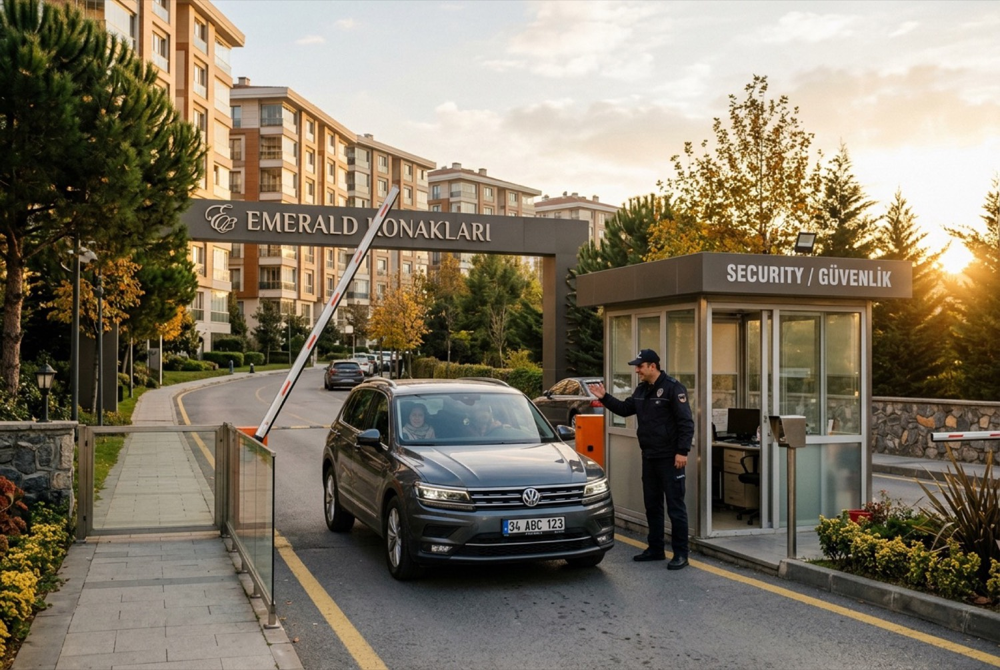
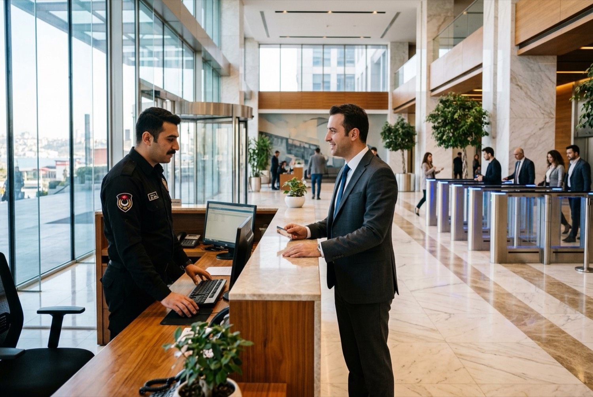
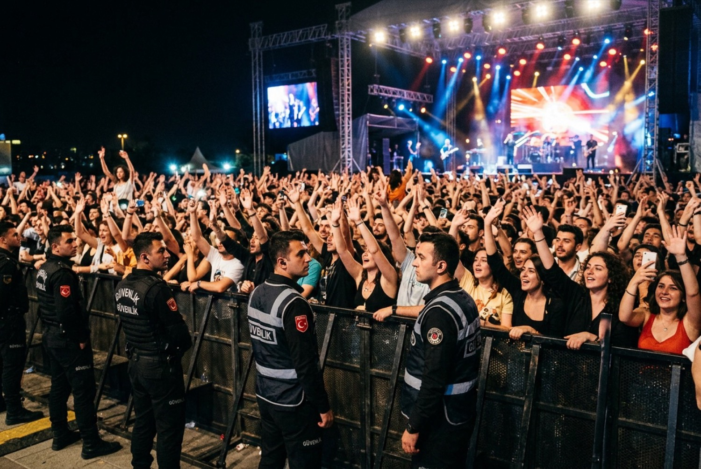
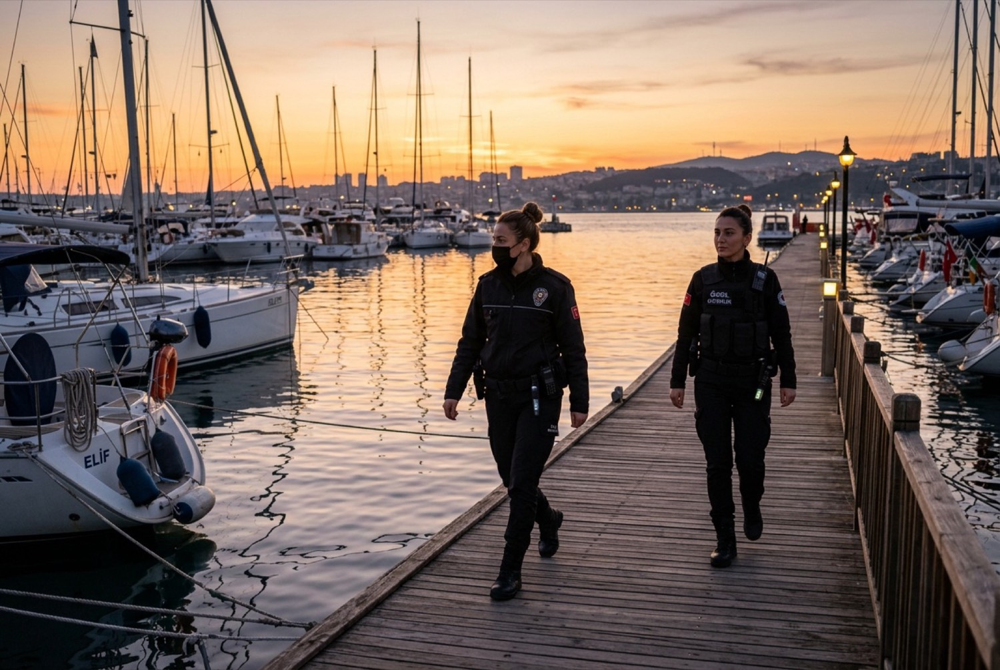
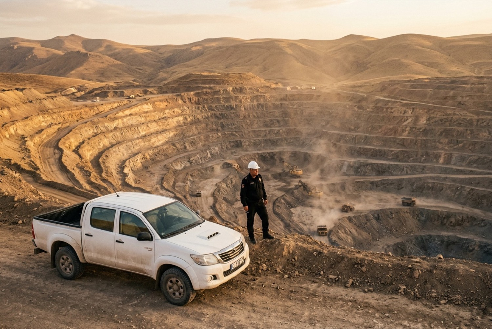
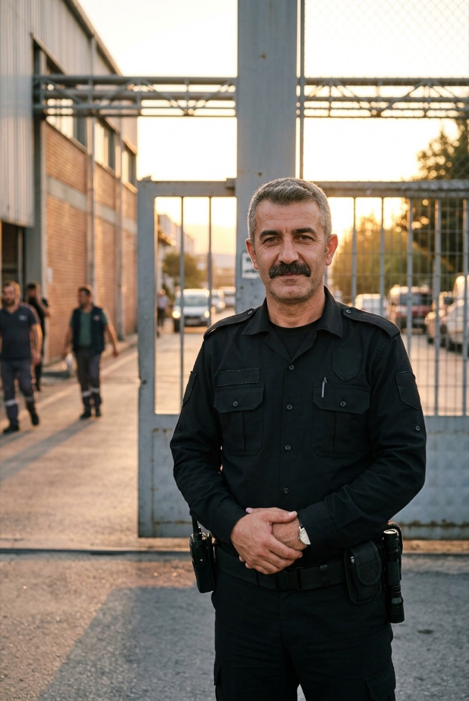

Tesisinizin güvenliği, belgeleriyle birlikte
RESS Koruma 2012'den beri fabrika, hastane, AVM, site ve plazalarda 5188 sayılı Kanun'a göre lisanslı özel güvenlik hizmeti veriyor. Kaç görevli gerektiğini, hangi belgelerle çalıştığımızı ve size en yakın bölge müdürlüğünü bu sayfada bulabilirsiniz.
- Faaliyette
- 2012'den beri
- Lisanslı personel
- 500+ÖGKK sahibi
- Kurumsal müşteri
- 150+
- Bölge müdürlüğü
- 8ve genel müdürlük
- Hizmet kapasitesi
- 81 il
- Operasyon
- 7/24vardiya amirliği
Satınalmada sorulan altı soru
Bir güvenlik firmasıyla sözleşme öncesinde satınalma ve tesis yönetimi aynı soruları sorar. Cevapları ve ayrıntının bulunduğu sayfayı bir arada tuttuk.
Tesisimize kaç görevli gerekir?
Nokta sayısı ve çalışma saatine göre hesaplanır: 7/24 tek nokta yaklaşık 4,2 görevli demektir. Aşağıdaki hesaplayıcıda kendi tesisinizi deneyebilirsiniz.
Hesaplayıcıya gitHangi belgelerle çalışıyorsunuz?
İçişleri Bakanlığı faaliyet izni, tüm personelde Özel Güvenlik Kimlik Kartı, mesleki sorumluluk sigortası ve kalite belgeleri. Belgeler sözleşme öncesi paylaşılır.
Belge listesiBölgemizde ekibiniz var mı?
Genel müdürlük İstanbul Esenyurt'ta; Kocaeli, Ankara, Ordu, İzmir, Adana, Antalya, Gaziantep ve Doğubayazıt'ta bölge müdürlüğümüz bulunur.
Bölge haritasıKimlere hizmet verdiniz?
150 şubeli market zincirinden iki hastaneli sağlık grubuna kadar; Kim Market, Onur Market, Kolan Hastaneleri, Medilife, Kaya Holding, Ege Yapı.
ReferanslarNöbeti nasıl raporluyorsunuz?
RDN Dijital Nöbet ile devriye noktaları telefonla okutulur, olaylar fotoğraflı tutanağa bağlanır. Müşteri portalından günlük olarak izlenir.
Portal önizlemesiHizmet nasıl başlar?
Keşif, risk analizi, yazılı teklif, sözleşme, personel yerleştirme ve sürekli denetim. Fiyat keşiften sonra yazılı olarak verilir.
Başlangıç süreciTesisiniz için kaç görevli gerekir?
Tesis türünü, nokta sayısını ve çalışma saatlerini seçin; önerilen kadro hemen hesaplanır. Bu bir ön hesaptır, kesin kadro keşifte bölge müdürlüğümüzce belirlenir. Fiyat gösterilmez.
Hizmet verdiğimiz tesisler
Her tesis türünün riski, giriş düzeni ve raporlama beklentisi farklıdır. Hizmet kapsamını tesise göre ayrı ayrı yazdık; 13 hizmetin tamamı hizmetler sayfasında.

Fabrika ve sanayi
Araç ve personel girişi, kantar, sevkiyat kontrolü.

Hastane ve sağlık
Acil servis, ziyaretçi düzeni, kadın görevli.

AVM ve mağaza
Çok şubeli zincirlerde tek sözleşme, tek rapor.

Site ve rezidans
Ziyaretçi kaydı, otopark, gece devriyesi.

Plaza ve iş merkezi
Resepsiyon, turnike, kartlı geçiş koordinasyonu.

Etkinlik ve organizasyon
Dönemsel kadro, kalabalık yönetimi, arama noktası.

Marina ve liman
İskele devriyesi, K9, yük gemisi korumacılığı.

Maden ve şantiye
Geniş alan, drone gözetimi, malzeme kontrolü.
Neye söz veriyoruz, nasıl gösteriyoruz
Güvenlik hizmeti çoğu zaman “görevli geldi mi” sorusuyla ölçülür. Biz her taahhüdün yanına onu nasıl kanıtlayacağımızı yazıyoruz.
| Taahhüt | Nasıl kanıtlanır |
|---|---|
| Lisanslı personel | Her görevlinin ÖGKK numarası ve geçerlilik tarihi personel listesinde; kart süresi dolmadan yenileme takibi. |
| 7/24 vardiya | Vardiya devirleri RDN Dijital Nöbet'te saatiyle kayıtlı; boş kalan nokta anında bölge müdürlüğüne düşer. |
| Düzenli raporlama | Devriye okutma oranı, olay tutanakları ve aylık hizmet raporu müşteri portalında. |
| Hesap yöneticisi | Her sözleşmede adı ve telefonu yazılı bir sorumlu; aylık saha denetimi ve toplantı tutanağı. |
| Türkiye geneli | 8 bölge müdürlüğü; çok şubeli müşterilerde tek sözleşme ve tek fatura. |

Hizmete başlama süreci
İlk görüşmeden görevlinin noktaya yerleşmesine kadar yedi adım. Her adımın sonunda size yazılı bir çıktı verilir.
İletişim
Telefon, form ya da dijital asistan; talebiniz bölge müdürlüğüne düşer.
Keşif
Saha ziyareti, giriş noktaları ve mevcut düzenin kaydı.
Risk analizi
Olasılık × etki matrisi; yangın, hırsızlık, vandalizm.
Teklif
Kadro, vardiya düzeni ve hizmet seviyesiyle yazılı teklif.
Sözleşme
Hizmet seviyesi ve raporlama sıklığı sözleşmeye yazılır.
Yerleştirme
ÖGKK'lı görevliler, saha eğitimi ve nöbet defteri.
Denetim
Habersiz saha denetimi, tatbikat, aylık rapor.
Müşterilerimiz ne diyor
“Türkiye geneli 150 şubemizde verdiğiniz temizlik ve güvenlik hizmetleri noktasında çözüm ortaklığımız olduğundan dolayı gayet memnunuz.”
- Kim Market Perakende, 150 şube
- Onur Market Perakende, 40 şube
- Kolan Hastaneleri Sağlık, 2 hastane
- Medilife Sağlık
- Kaya Holding Kurumsal
- Ege Yapı İnşaat, Türkiye geneli
- Turkeyana Kurumsal
Size en yakın bölge müdürlüğü
Haritada bir noktaya dokunun; sorumlu iller ve iletişim bilgisi açılır. Keşif ve denetim o bölgenin ekibi tarafından yapılır.
Kesin kadro keşifte belirlenir
Bölge müdürlüğümüz tesisinizi yerinde görür; risk analizini, kadro önerisini ve fiyatı yazılı teklifle iletir.

Özel güvenlik kartınız varsa bize başvurun
Düzenli maaş, ilk günden SGK, yılda iki dönem hizmet içi eğitim. Görevliden proje müdürlüğüne kadar yükselen bir kariyer yolu.